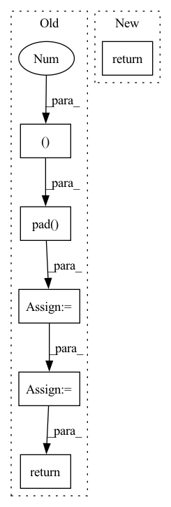

Pattern ID :10085
Before Change
// pad if size is not a multiple of 8
pad_h = lr_curr.size(2) - lr_curr.size(2) // 8 * 8
pad_w = lr_curr.size(3) - lr_curr.size(3) // 8 * 8
lr_flow_pad = F.pad( lr_flow, (0 , pad_w, 0, pad_h ), "reflect")
// upsample lr flow
hr_flow = self.scale * self.upsample_func(lr_flow_pad)
// warp hr_prev
hr_prev_warp = backward_warp(hr_prev, hr_flow)
// compute hr_curr
hr_curr = self.srnet(lr_curr, space_to_depth(hr_prev_warp, self.scale))
return hr_curr
def forward_sequence(self, lr_data):
After Change
else:
out = self.infer_sequence(lr_data, device)
return out
def forward_sequence(self, lr_data):
In pattern: SUPERPATTERN
Frequency: 3
Non-data size: 6
Instances Fragment ID: 35872162
Project Name: skycrapers/tecogan-pytorch
Commit Name: ca75b1162e02809d6300343eec0b776ef3f987e2
Time: 2021-07-17
Author: dengjn@zju.edu.cn
File Name: codes/models/networks/tecogan_nets.py
M Class Name: FRNet
N Class Name: FRNet
M Method Name: forward(3)
N Method Name: forward(4)
M Parent Class: BaseSequenceGenerator
N Parent Class: BaseSequenceGenerator
M File Name: codes/models/networks/tecogan_nets.py
N File Name: codes/models/networks/tecogan_nets.py
M Start Line: 176
M End Line: 201
N Start Line: 161
N End Line: 166
Before Change
B, C, H, W = x.shape
// Emulate "SAME" padding
if self.with_conv:
x = F.pad( x, (0 , 1, 0, 1 ))
x = self.Conv_0(x)
else:
x = F.avg_pool2d(x, kernel_size=2, stride=2, padding=0)
assert x.shape == (B, C, H // 2, W // 2)
return x
class ResnetBlockDDPM(nn.Module):After Change
self.conv = nn.Conv2d(dim, dim, 3, 2, 1)
def forward(self, x):
return self.conv(x)
// building block modules Fragment ID: 35872103
Project Name: janspiry/image-super-resolution-via-iterative-refinement
Commit Name: 1a5a8bc409a8b8e072eb2bf25330d4662fd279c4
Time: 2021-08-09
Author: lw_jiang@foxmail.com
File Name: model/ddpm_modules/unet.py
M Class Name: Downsample
N Class Name: Downsample
M Method Name: forward(2)
N Method Name: forward(2)
M Parent Class: nn.Module
N Parent Class: nn.Module
M File Name: model/ddpm_modules/unet.py
N File Name: model/ddpm_modules/unet.py
M Start Line: 162
M End Line: 171
N Start Line: 58
N End Line: 58
Before Change
self.conv1 = torch.nn.Conv1d(hidden_features * intermediate_factor, hidden_features, kernel_size, bias=False)
def forward(self, inp: torch.Tensor):
inp = self.conv0(torch.nn.functional.pad( inp, (self.kernel_size - 1, 0 )) )
inp = _activate_norm(inp)
inp = self.conv1(torch.nn.functional.pad(inp, (self.kernel_size - 1, 0)))
return inp
class LinearAttentionCell(torch.jit.ScriptModule):After Change
bias=False).weight
def forward(self, inp: torch.Tensor):
return feed_forward(inp, self.w0, self.w1, self.kernel_size)
@torch.jit.script Fragment ID: 35872106
Project Name: homebrewnlp/homebrewnlp
Commit Name: 007c929505d510af1b041da75b1dbfbcdc2f931f
Time: 2021-08-27
Author: 39779310+ClashLuke@users.noreply.github.com
File Name: module.py
M Class Name: FeedForward
N Class Name: FeedForward
M Method Name: forward(2)
N Method Name: forward(2)
M Parent Class: torch.nn.Module
N Parent Class: torch.jit.ScriptModule
M File Name: module.py
N File Name: module.py
M Start Line: 218
M End Line: 221
N Start Line: 285
N End Line: 285